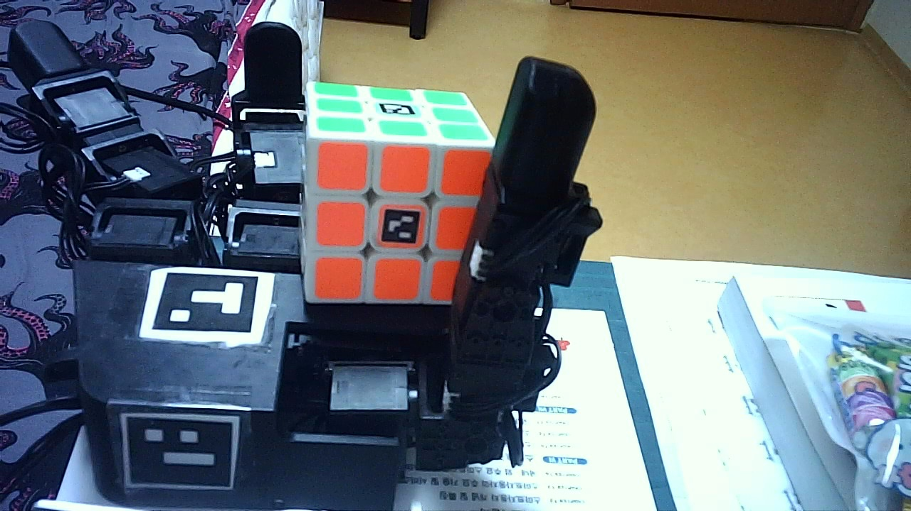
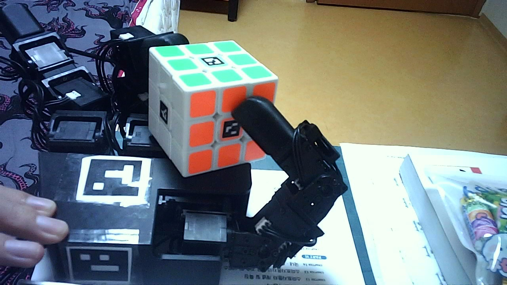
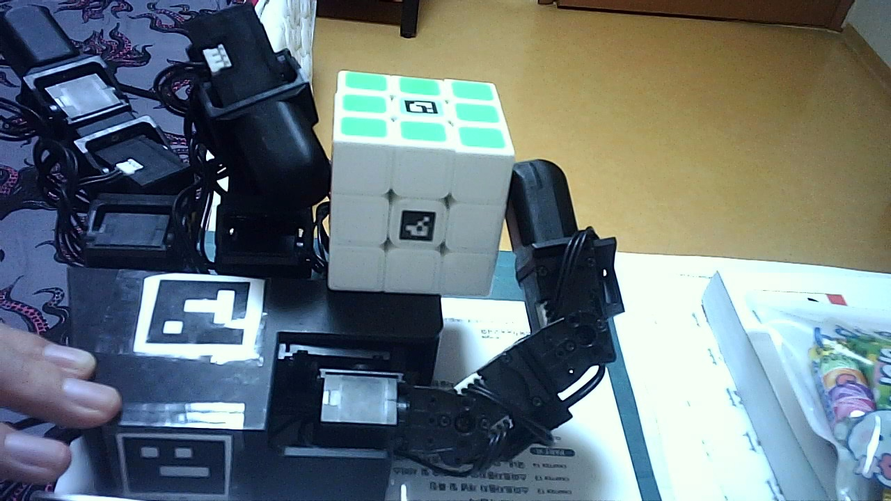
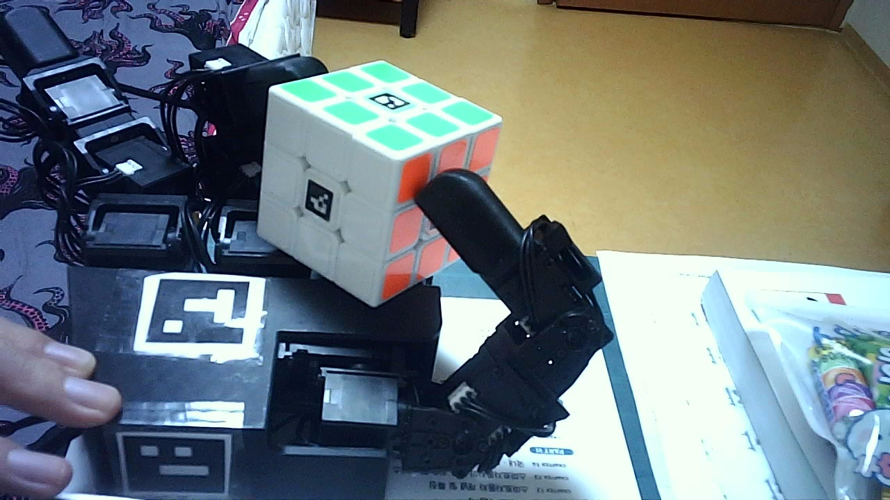

이어서 약 42° 역회전했습니다. 다시 비틀리는 것으로 보였던 부분은 프로그램의 역회전 구간입니다. 두 실행은 모두 정상 종료와 토크 OFF를 확인했습니다.
정회전 영상과 역회전을 포함한 전체 영상을 구분해 보존했습니다. 90° 역회전은 아직 완료하지 못했습니다.




역회전 시작 전에 끝나는 발췌입니다. 실제 속도로 재생하며 전체 실행 영상은 아래에 있습니다.
배치와 제거를 기다린 시간까지 포함합니다. 원본 사진과 시간 기록을 사용했으며 각도는 카메라 기준 추정입니다. 큐브 전체 맞추기는 아직 완료하지 않았습니다.
5V 연결 후 16개 모터의 응답과 토크 OFF, 정지 상태를 확인했습니다. 현재 각도로 복귀 경로와 역회전 접촉을 검토 중입니다. 큐브는 손 밖에 두고 손가락과 받침은 그대로 두면 됩니다.